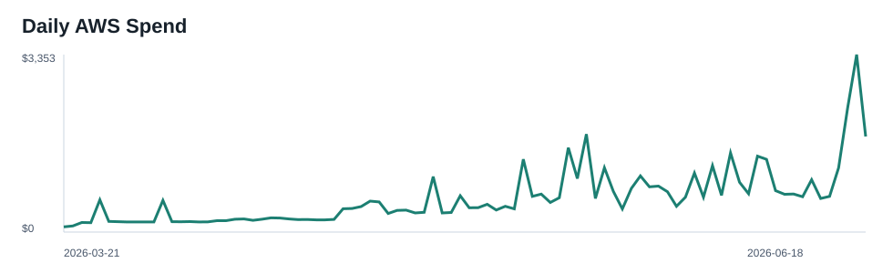
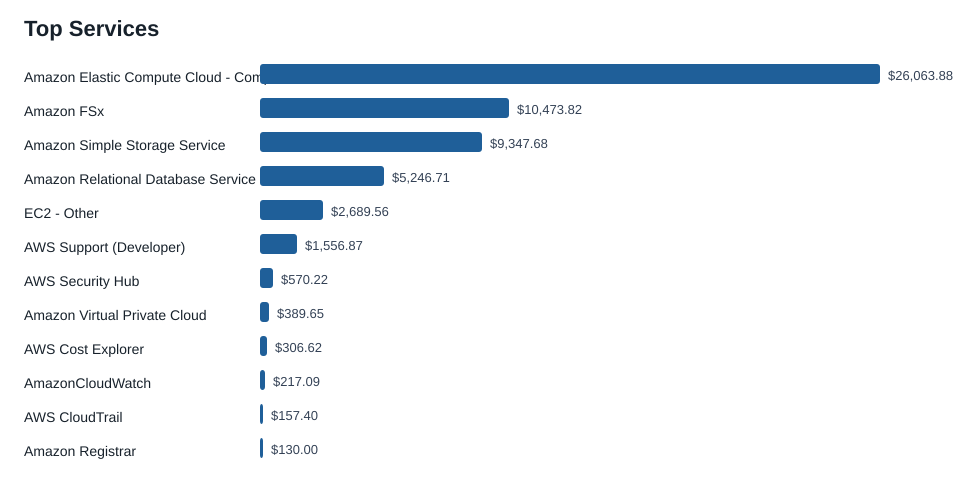
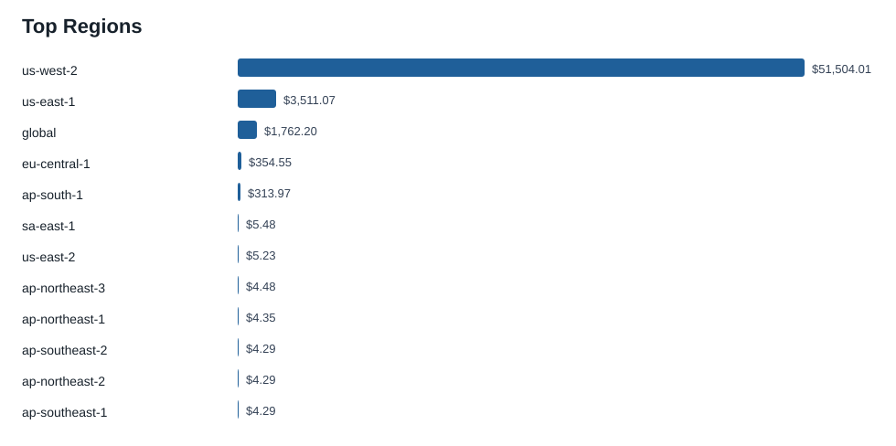
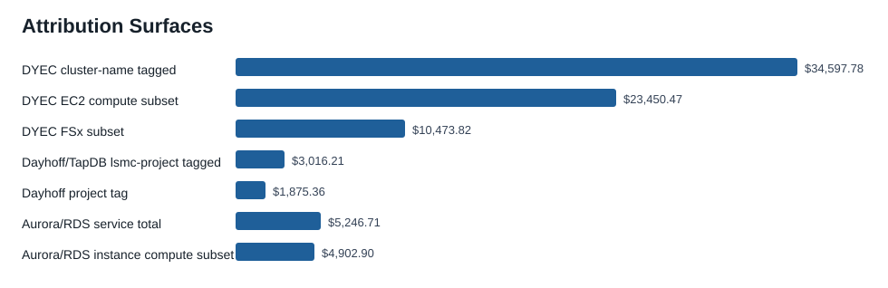

No AWS mutations were performed. Today, June 18, is included and may remain estimated until AWS billing settles.
Total 90-day spend$57,512.08Unblended cost
DYEC tagged$34,597.78cluster-name tag
DYEC EC2 compute$23,450.47tagged EC2 compute
RDS/Aurora$5,246.71service total
Dayhoff/TapDB$3,016.21lsmc-project tag
Resource count158live inventory
Top Spend
Services
Service
90-day spend
Amazon Elastic Compute Cloud - Compute
$26,063.88
Amazon FSx
$10,473.82
Amazon Simple Storage Service
$9,347.68
Amazon Relational Database Service
$5,246.71
EC2 - Other
$2,689.56
AWS Support (Developer)
$1,556.87
AWS Security Hub
$570.22
Amazon Virtual Private Cloud
$389.65
Regions
Region
90-day spend
us-west-2
$51,504.01
us-east-1
$3,511.07
global
$1,762.20
eu-central-1
$354.55
ap-south-1
$313.97
sa-east-1
$5.48
us-east-2
$5.23
ap-northeast-3
$4.48
Overview Plots
Daily spend

Top services

Top regions

Attribution surfaces

Attribution Surfaces
These surfaces are not all mutually exclusive. Historical DYEC and Dayhoff/TapDB values use active billing tags; Terrarium and Aquarium use recent resource-level data and live inventory because historical app tags are not active.
RDS/Aurora service total is $5,246.71. The apparent instance-class compute subset is $4,902.90.
RDS usage type
90-day spend
USW2-InstanceUsageIOOptimized:db.r8g.2xl
$1,102.97
USW2-InstanceUsageIOOptimized:db.r8g.xl
$1,102.84
USW2-InstanceUsage:db.r6g.large
$558.74
InstanceUsage:db.r5.large
$472.54
USW2-InstanceUsage:db.r5.large
$431.15
InstanceUsage:db.r6g.large
$395.37
InstanceUsage:db.t3.medium
$238.36
USW2-Aurora:ServerlessV2IOOptimizedUsage
$219.53
USW2-InstanceUsage:db.r8g.large
$200.25
InstanceUsage:db.t4g.medium
$198.37
USW2-InstanceUsage:db.t4g.medium
$108.81
USW2-InstanceUsage:db.t4g.micro
$88.19
RDS:GP2-Storage
$51.91
USW2-RDS:GP3-Storage
$20.96
USW2-RDS:GP2-Storage
$18.45
Terrarium And Aquarium
Class
Recent resource-level spend
30.4-day run-rate
unallocated
$10,013.10
$21,769.55
dayhoff
$2,823.44
$6,138.46
terrarium
$64.85
$140.99
aquarium
$14.30
$31.09
Recent class/service split
Class
Service
Recent spend
30.4-day run-rate
unallocated
Amazon Elastic Compute Cloud - Compute
$9,547.59
$20,757.48
dayhoff
Amazon Relational Database Service
$1,910.70
$4,154.07
dayhoff
Amazon Elastic Compute Cloud - Compute
$809.71
$1,760.40
unallocated
EC2 - Other
$331.98
$721.76
dayhoff
EC2 - Other
$88.33
$192.04
unallocated
Amazon Virtual Private Cloud
$73.05
$158.82
unallocated
Amazon Relational Database Service
$60.48
$131.49
terrarium
EC2 - Other
$29.50
$64.14
terrarium
Amazon Elastic Container Service
$16.10
$35.00
dayhoff
Amazon Elastic Load Balancing
$14.69
$31.94
terrarium
Amazon Relational Database Service
$12.48
$27.13
aquarium
Amazon Elastic Container Service
$8.06
$17.52
terrarium
Amazon Elastic Compute Cloud - Compute
$6.76
$14.70
aquarium
Amazon Relational Database Service
$6.24
$13.57
Live resource counts
Class
Live resources
unallocated
64
dayhoff
46
dyec_cluster
25
terrarium
18
aquarium
5
Limits And Reproducibility
Cost Explorer active tag keys for this window were limited to ParallelCluster/project tags. `Name`, CloudFormation stack-name, ECS service, and RDS identifier were not active historical cost allocation tags. Therefore DYEC and Dayhoff/TapDB are separated with historical tag evidence where tags exist, while Terrarium and Aquarium are separated only in live inventory and recent resource-level Cost Explorer data. Unclassified or blank-tag spend remains unallocated rather than inferred.